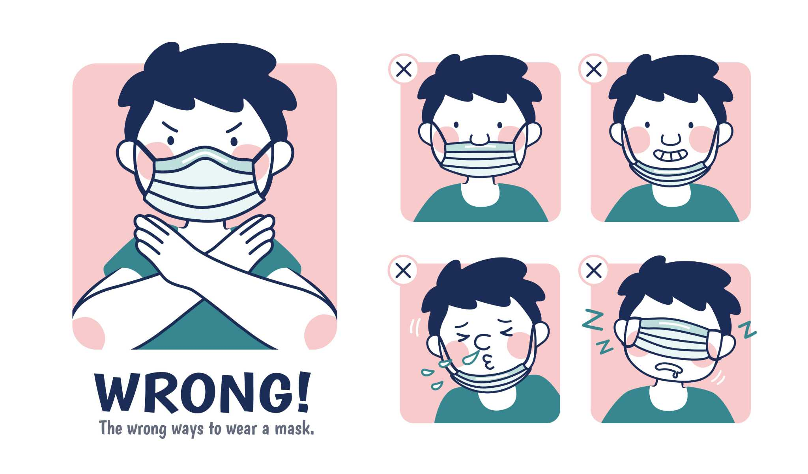
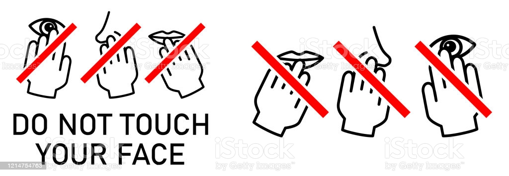

Wear a mask!

1. Place each loop around each ear. Try not to stretch them out too
much or they could break/loosen.
2. Pull the mask across your face making sure that your nostrils and
mouth are completely covered.
3. Adjust the mask so that it is right above your nostrils and under
your chin.
Note: Keep in mind other measures like social distancing should be taken even when wearing a mask.
Avoid touching
your face!

Avoid touching your nose, mouth or eyes! Those are sure ways that COVID-19
can get into your system!
If you need to touch your nose, mouth or eyes, wait until you get home or
when you get the chance to properly clean your face and hands.
Hand Sanitizer!

1. Be very careful when selecting hand sanitizer! Right now, there are so many recalled
brands/hand sanitizers out there that could do lasting damage to your body.
Here is a link that
shows you all of the recalled hand sanitizers.
2. Make sure that the hand sanitizer you purchase has at least 70% alcohol!
Anything less than that will not do the job, you need 70% alcohol content in your hand
sanitizer for viral.
3. When applying hand sanitizer, make sure you get between your fingers, palms and the
back of your hand. Ensure that the hand sanitizer wets your hands for at least 30 seconds
for optimal effect.
Senior Design Software Mini-Project 2020
© Steven Tong & Jaden Tayag 2020